Chinese Herbology

Since I grew up in China, I had many chances to get in touch with all the traditional Chinese culture. One of the most amazing culture is Chinese herbology. About how the Chinese herbology work cannot be explained in modern science. The whole medicial system of Chinese herbology was concluded from Chinese ancestors thousands years ago. Thus, when I choose 'Chinese Herbology' as the topic of my Wiki Book assignment, I think of the traditional Chinese layout, which is all the characters are laying in the vertical way. Because that is the way that those old Chinese herbological was written. However, since alphabets cannot be arranged vertically. It is also a test that how can English words and Chinese characters work in the vertical way. I want the book can be readable for everyone but also looks harmonic on the same page.
After testing, I decied to make the English sentences still read in the horizontal way but rotate them 90 degrees so that makes the traditional Chinese layout and both alphabets look like they lay in the same way. The two different languages communicate each other somehow but cannot be read in the same way.
Close
Weather and National Flag
I have always been thinking how we can change a graphic elemnts that already existed into something else that can transit different information to the public. And I believe it is one of our graphic designers' mission.
In this website, the graphic elements are moving based on the countries' weather alteration. The speed of the circle rotation represent the speed of wind. And the color of the circle represent the temperature. The hotter the wather is, the darker and deeper the circle's color is. The transparency of the long squares represent current cloudiness. And if current humidity is too high, there will be a shade of fog gradually cover the website.
Go To The Website
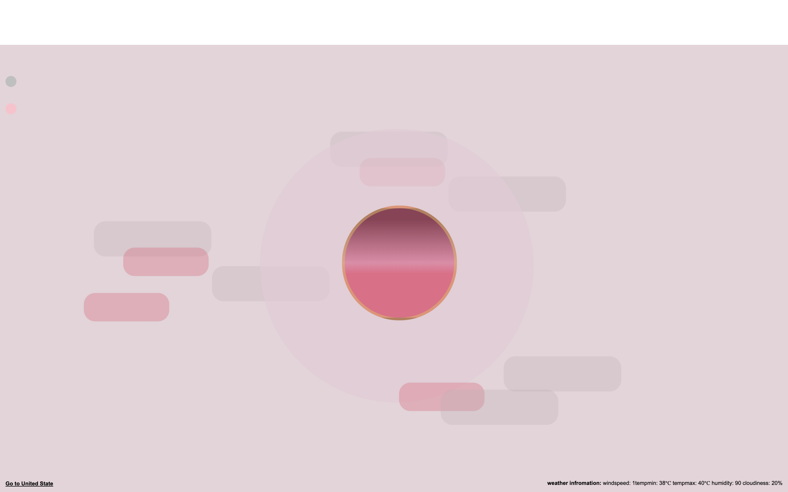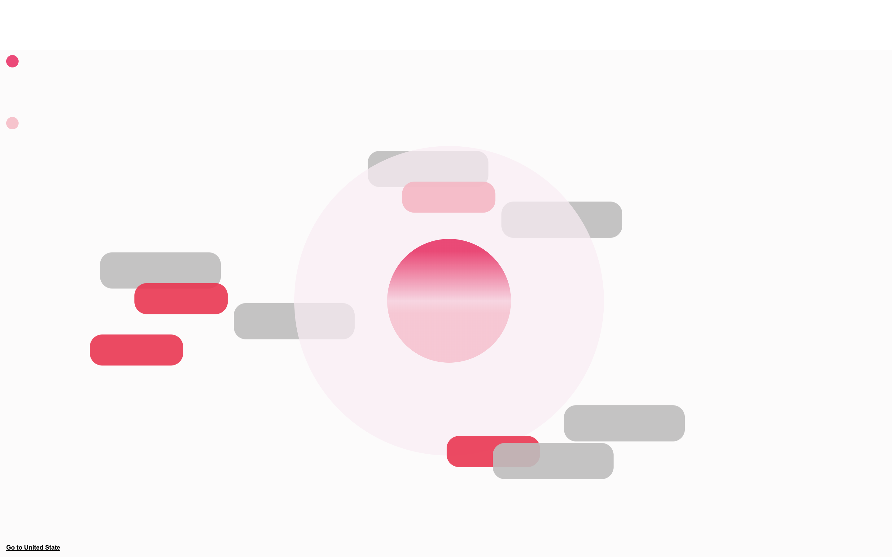
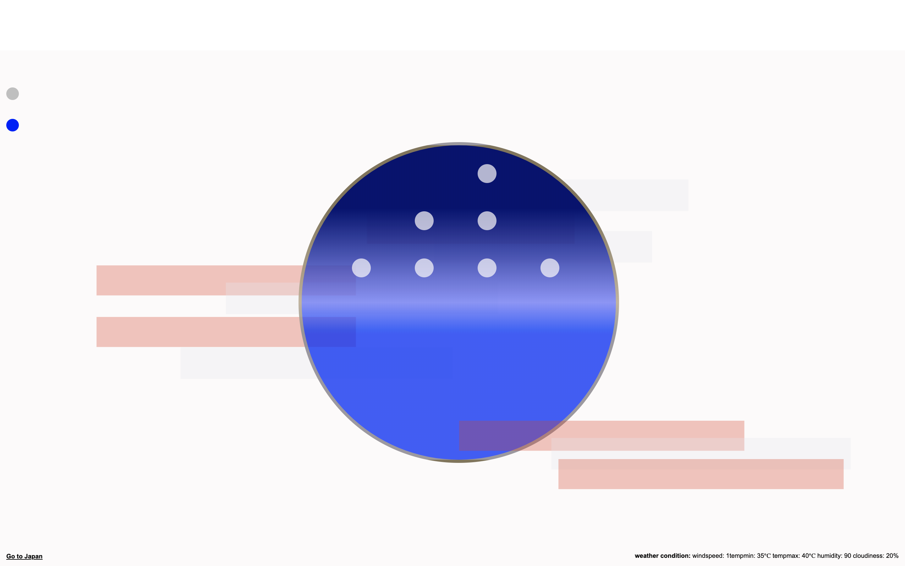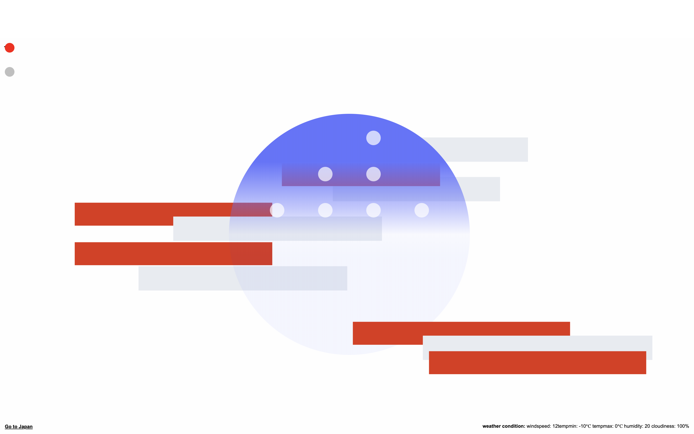
Close
Toy for Screen Playground
Just for Fun
And that is interesting that Chinese chracters themselves can be a decorative structure and be applied to the web.
Go To The Website
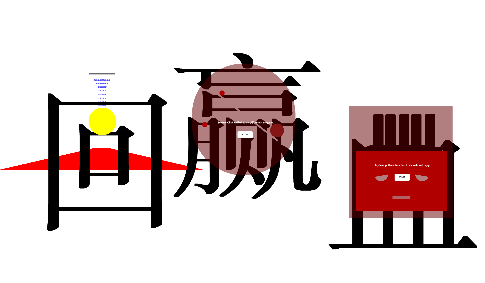
Close
New York Design

What is good design? That is a good question. And many designers, including designers have debated that for serval centuries. For example, Massimo Vignelli, a graphic designer who used to design the sign for New York Subway, set up a standard to judge what is a good graphic design in this article The Vignelli Canon. And that why when I was assigned to redesigned his article, I decided to put it into the format of newspaper with many other different opinion about “What is good graphic design”.
Close
Susan Kare Report

Susan Kare is one of graphic designers that I really like. Her design have profond affected on modern user interface design. With only limited pixals, she can design so many clear and simple icons. I am really happy that I have a chance to do research on her and design a magazine layout based on her style.
I choose use the pixelated style because it is her most famous art style. Although the reason behind her style is because of technoloical limitation in the past, I want to use this nostalgia style to heightlight the contribution she brought to the modern user typface design.
Full Text:
One day in 1984, Susan got a phone call from her high school friends Andy Hertzfeld. Andy asked her if she would be interested in doing fonts and icons for his new invitation, which is the 1st version of Macintosh. At that time, no one knew how profound this heavy machine would bring to the world, and also, the first version of the fonts and interface designed by this young college student. When Susan drew a pirate flag with rainbow Apple icon inside skull’s left eye and put this sentence Steve Job’s words “It’s better to be a pirate than join the navy.”, both the journey of Apple and her life as a Graphic Designer started.
At Apple Inc, since Kare had little experience of designing the digital realm, she would drew from her experience with mosaics, needlepoint, and pointillism. After procuring the smallest graph paper” Kare could find in an art supply store, she drew out a 32-by-32 grid. Drawing was such a powerful tool for Kare. Nowadays, even she chose to design with Photoshop and Illustrator, she will still do a lot of sketches with bound notebooks and gel pens.
Kare was famous for her icons and interface. Every icon was started from a computer function. The time of producing a new icon was varied from two days to some weeks. The inspiration of her icons can be varied like art history or wacky gadgets or forgotten hieroglyphic. For instance, one of Apple’s “command”icon was was taken from the Saint Hannes cross, which was a symbol for a “place of interest. And the design goal was to visualize jargon and make those hard words digestive for people to read. Instead of just restrict to English language, the distinction between each different was also avoid carefully when the icon was designed. She does not strict about to design a very recognizable icon. For her, designing out some icon that will be easily remembered is counted as successful. “I would say an icon is successful if you could tell someone what it is once and they don’t forget it,” she said.
She designed the original type fonts that shipped with the Macintosh and were named for cities: Chicago, New York and San Francisco. Due to the constrain of 9 by 7 dots per letter, Kare tried to avoid uneven and pixelated looking computer typefaces by enlisting only horizontal, vertical, or 45-degree lines.2 One of the resulting typeface ‘Chicago ’, which is the font used on the Macintosh and iPod for more than two decades, indicate her attempt was achieved successfully.
Between 2006 and 2010, Susan Kare produced icons for gift section of Facebook . Users can spend 1$ to buy a digital gift and sent it to their friends. And all these gift icons were designed by Susan Kare. One of the icon “Big Kiss” was used as one of the default user image of Mac OS X. In 2015, Kare started to work for Pinterest as a product design leader until now. And the majority of his work content was working on products like buyable pins, guided search, and app pins.
Her icons are simple, clear and user-friendly with some sense of playful and cuteness inside. Those icons designed by her in pixels always surprised me by their good combination of art and form. The information the icon tries to deliver was accurate in just serval pixel squares. For her, her icons are not only just a visualized tool for guidance but also a piece of art. Right now, many of Apple’s interface are altered based on Kare’s original design of the 1st Macintosh, which is the evidence of her icons’ successfulness.Her design of icons and fonts break the limit of pixel and show the users a clear and simple instruction about the function of each character was telling. Undoubtedly, her contribution to the interface of modern computer is huge and should never be forgotten.

Close
Miss Alice’s Museum LOGO system
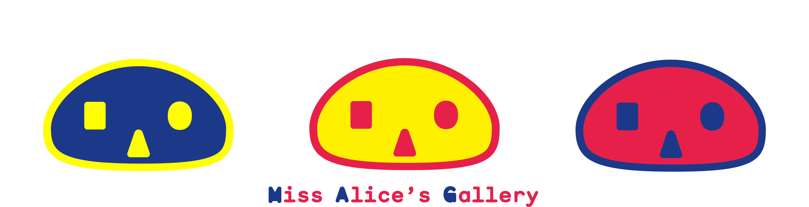
A good logo system can help any type of organization stand. We can imagine a comapny is like a person and the brand system is like this person’s outlook based on their personality. As a designer, the research should be done before the design so that the personality of the target can be found. After the reseach, starting from the logo and tyoeface and color, it is really important to figure out how these will come together and also give a unique identity to the target organization.
For this assignment, we are free to design LOGO system for any type of museum/gallery. And I designed a brand for a children’s art gallery because I feel many brand identity of art museum for children is not well designed. And many of children's gallery or museum even don't have a distinguished logo or color scheme or good typeface choices, which makes me feel I should explore a little bit about that field.
I used to name this as Alice Gallery but I got my teacher’s advice that this name is not childish. I took his advice and changed the name to Miss Alice’s Museum [MAG]. The name “Alice” is from a traditional fairy tale “Alices’s in Wonderland”. The first version logo for MAG is a cute cat, which its prototype is Cheshire Cat in the fairy tale. Originally, I wanted to extract color and elements from traced painting and recreate the logo. But I got the feedback that the painting was kind of losing details after tracing them in Adobe Illustration and there should be a distinguished color scheme for the brand. Besides, the rule for the logo alteration was not clear. And I agreed with all those points above and then I made some changes based on that.
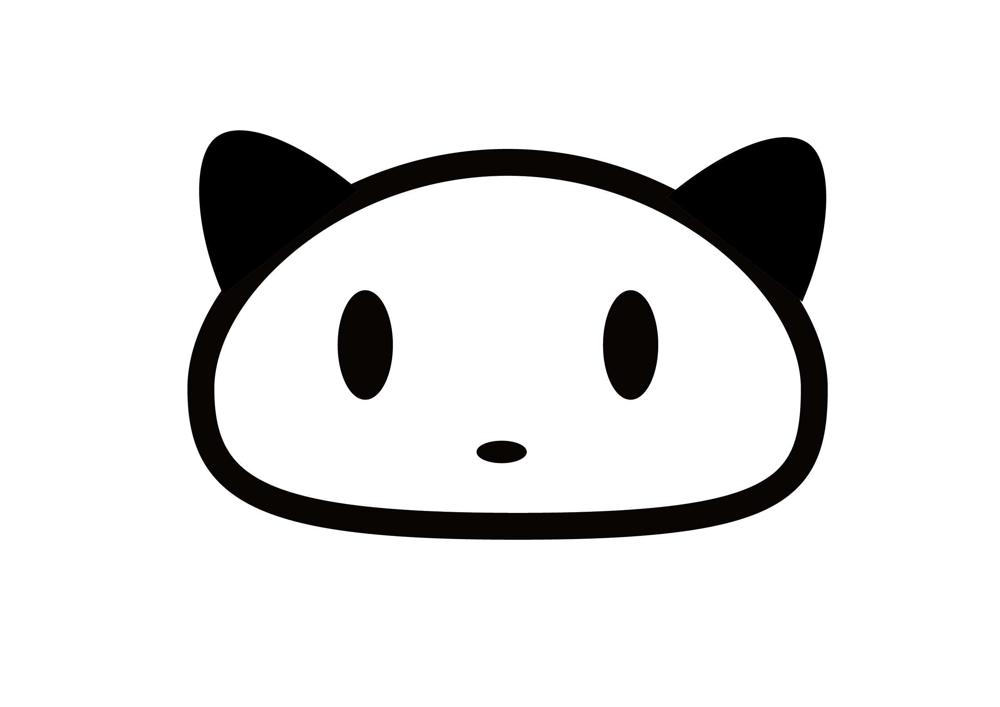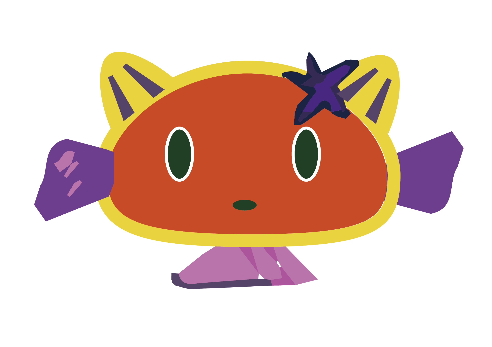
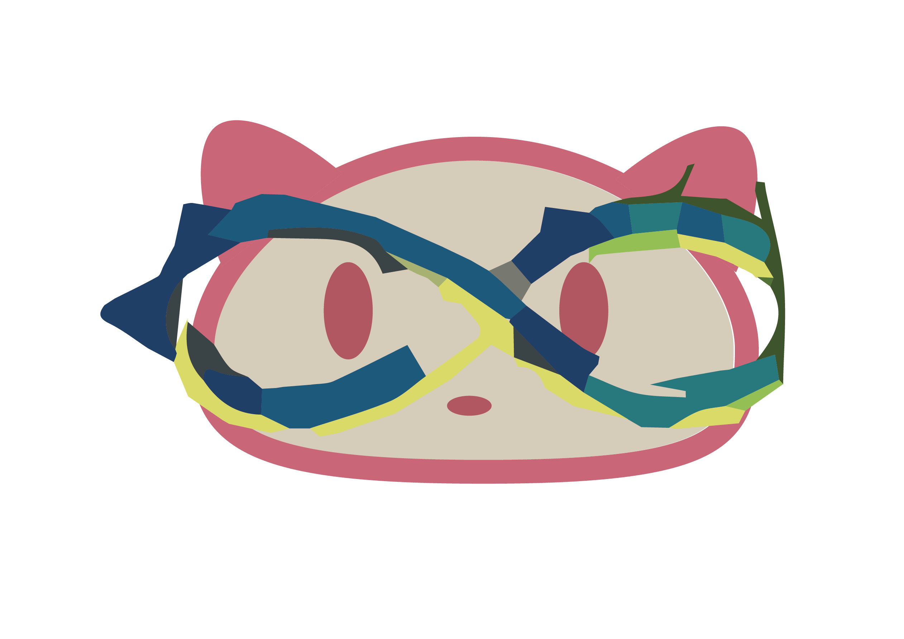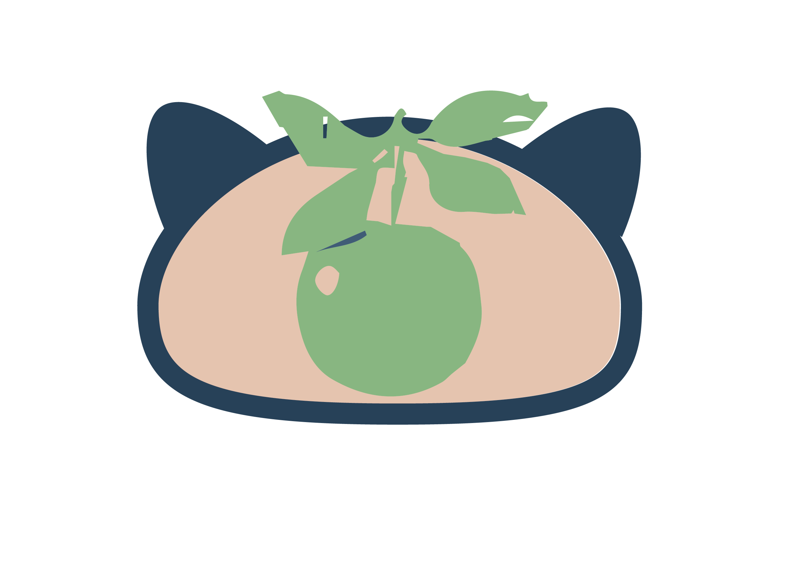
This is the first version logo logo. The style is not that consistent. And there was no color to help the personality of company to stand out.
The I choose blue, bright yellow and reddish pink as the color theme of my museum, which is extracted from three primary color. I changed red color to a little bit pinkish because I found many kids like red and pink. And kids are tend to more like bright color because those color can catch their eyes more than dark color. Besides, with such a strong contrast of color the identity of MAG will be distinguished among all the galleries and museums.
I used to name this as Alice Gallery but I got my teacher’s advice that this name is not childish. I took his advice and changed the name to Miss Alice’s Museum [MAG]. The name “Alice” is from a traditional fairy tale “Alices’s in Wonderland”. The first version logo for MAG is a cute cat, which its prototype is Cheshire Cat in the fairy tale. Originally, I wanted to extract color and elements from traced painting and recreate the logo. But I got the feedback that the painting was kind of losing details after tracing them in Adobe Illustration and there should be a distinguished color scheme for the brand. Besides, the rule for the logo alteration was not clear. And I agreed with all those points above and then I made some changes based on that.
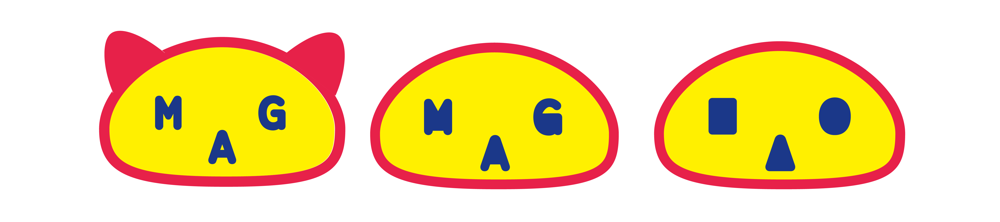
Basically I change the original logo, I think the logo with different shapes that inspired by MAG initals have more potential and more flexible to do changes.
Close
Emoji and Sound Toy
When we are entering some text in the textboxs of any websites, do we really know what we are typing? I believe every letter have different personality. And their personalities will change in different conditions. And our human beings are controlling their personalities.
Language is charming. I am always intrigued by letters and text. Different typefaces help to build letters’ personalities in that articales. And based on that, I decided to find different sounds for each letter and put them on the screen. At first, I wanted to do a website imitate the condition of New York Central Park. But that scheme is not interesting to play and audiences may not want to go back once again. After that, based on many people’s feedbcks, I decided to make the sound more fun to play. Then, I decided to replace the letter with emoji faces so that the entire website will become more fun to play.
However, when I was working on this project, COVID-19 happened and my normal daily lives was plaused. Based on those stressful experiences and what I had seen from news, I felt it was something I should never forget. Thus, I did another one version which recorded the overwhelmed stressful feeling at that time.
Go To The Website
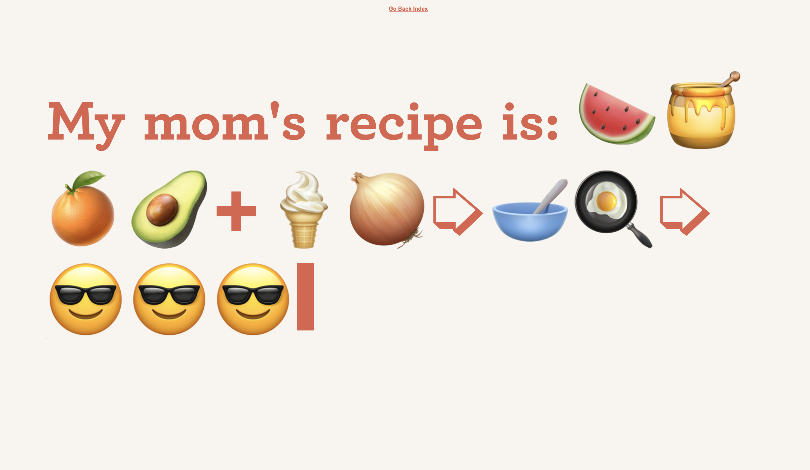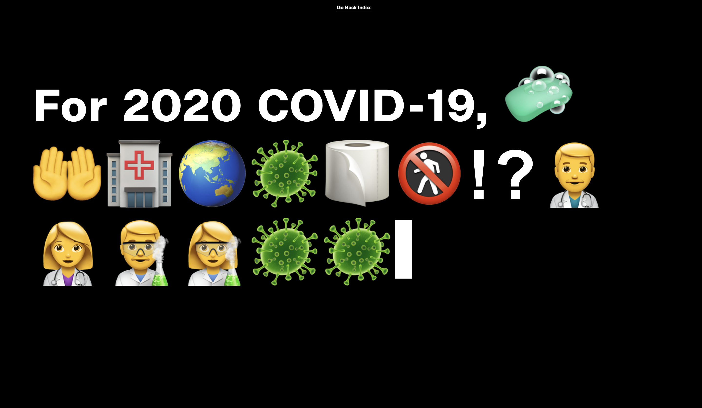
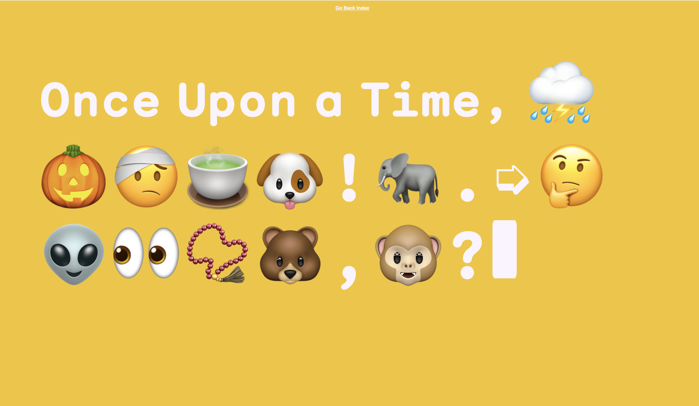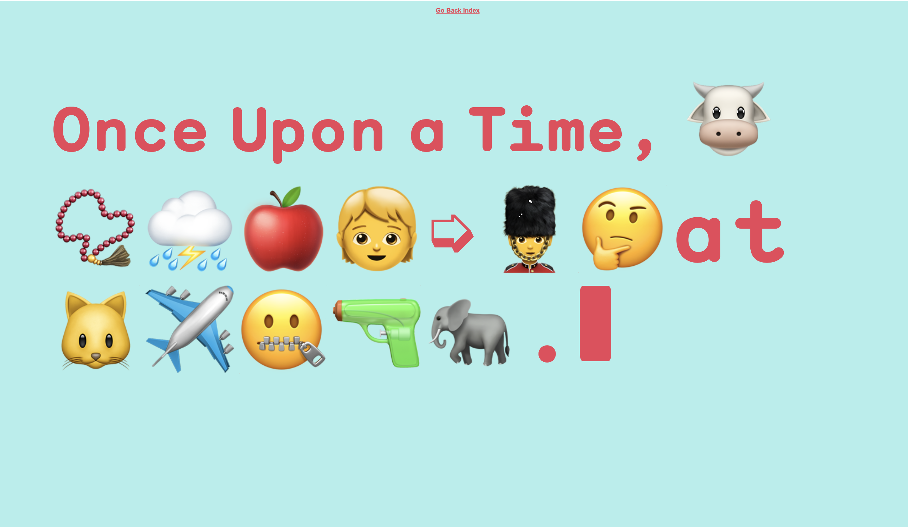
Close